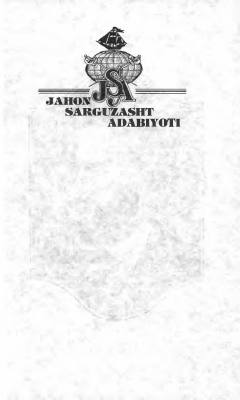

SOKapitan Nemoning «Nautilus» kemasidagi hayajonli suv osti sarguzashtlari haqidagi mashhur roman.
Ushbu roman mashhur yozuvchi Jyul Vern qalamiga mansub bo'lib, kapitan Nemo va uning «Nautilus» kemasida suv osti olami bo'ylab qilgan hayajonli sayohatlari haqida hikoya qiladi. Asar kitobxonlarni okeanning sirli sirlari va favqulodda sarguzashtlar olamiga olib kiradi. Kitob o'zbek tiliga Sa'dulla Karomatov tomonidan tarjima qilingan.